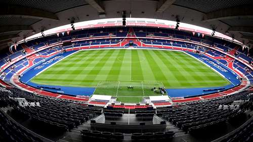
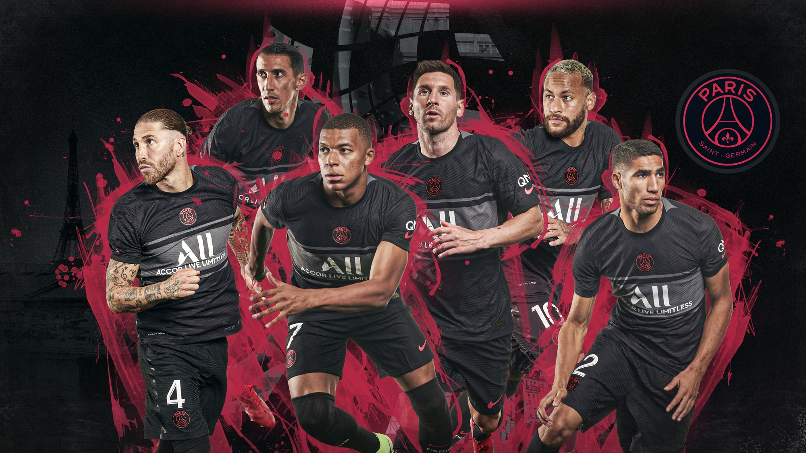

Paris Saint-Germain FC
Paris Saint-Germain Football Club French pronunciation commonly referr ed to as Paris Saint-Germain, PSG, Paris or Paris SG, is a professional football club base d in Paris, France. They compete in Ligue 1, the top division of French football. France's most successful club, they have won over 40 official honours, including nine league titles and one major European trophy. Their home ground is the Parc des Princes. PSG were founded in 1970, following the merger of Paris FC and Stade Saint-Germain. The Parisians won their first major honour, the French Cup, in 1982 and their first Division 1 title in 1986. The 1990s was among the most successful periods in PSG's history; they claimed a second league title, three F rench Cups, two French League Cups, two French Super Cups and the UEFA Cup Winners' Cup in 1996 . After suffering a decline in fortunes during the 2000s, the Red and Blues have enjoyed a revival since 2011 with increased financial backing, achieving unparalleled dominance in domestic competitions, winning seven league titles and twenty national cups. PSG have also become a regular feature in the UEFA Champions League, reaching their first final in 2020. Paris SG have the most consecutive seasons playing in France's top flight and are one of two French clubs to have won a major European title. They are the most popular football club in France and one of the most widely supported teams in the world. PSG's home kit colours are red, blue, and white, and their crest features the Eiffel Tower and a fleur-de-lis. PSG have a longstanding rivalry with Olympique de Marseille; the duo contest French football's most notorious match, Le Classique. Tamim bin Hamad Al Thani, the Emir of Qatar, owns PSG through closed shareholders Qatar Sports Investments (QSI), which purchased the club in 2011. The takeover made PSG the richest club in France and one of the wealthiest in the world. As of the 2019–20 season, PSG have the seventh-highest revenue in the footballing world with an annual revenue of €541m according to Deloitte, and are the world's ninth-most valuable football club, worth $2.5bn according to Forbes.
 